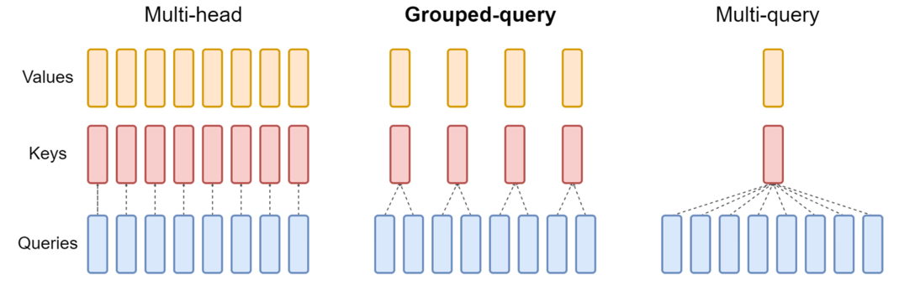

LLaMA
LLaMA系列论文
LLaMA
LLaMA: Open and Efficient Foundation Language Models
Data
Mixture of data
| Dataset | Sampling prop. | Epochs | Disk size |
|---|---|---|---|
| CommonCrawl | 67.0% | 1.10 | 3.3 TB |
| C4 | 15.0% | 1.06 | 783 GB |
| Github | 4.5% | 0.64 | 328 GB |
| Wikipedia | 4.5% | 2.45 | 83 GB |
| Books | 4.5% | 2.23 | 85 GB |
| ArXiv | 2.5% | 1.06 | 92 GB |
| StackExchange | 2.0% | 1.03 | 78 GB |
Tokenizer
bytepair encoding (BPE) algorithm, using the implementation from SentencePiece.
entire training dataset contains roughly 1.4T tokens after tokenization.
perform approximately two epochs.
Architecture
Pre-normalization [GPT3]: To improve the training stability, we normalize the input of each transformer sub-layer, instead of normalizing the output. We use the RMSNorm normalizing (Root Mean Square Layer Normalization) function, introduced by Zhang and Sennrich (2019).
RMSNorm是对LayerNorm的一个改进，没有做re-center操作（移除了其中的均值项），可以看作LayerNorm在均值为0时的一个特例。论文通过实验证明，re-center操作不重要。
作者认为这种模式在简化了Layer Norm的同时，可以在各个模型上减少约 7%∼64% 的计算时间
SwiGLU activation function [PaLM]. We use a dimension of \(\frac{2}{3}4d\) instead of \(4d\) as in PaLM.
Rotary Embeddings [GPTNeo].
寻找\(f\)，满足 \[ <f(q,m), f(k,n)> = g(q,k,m-n) \]
利用复数的旋转性质，可以得到Q、K与（m-n）相对位置的关系。
具体实现过程：对于 token 序列中的每个词嵌入向量，首先计算其对应的 query 和 key 向量，然后对每个 token 位置都计算对应的旋转位置编码，接着对每个 token 位置的 query 和 key 向量的元素按照 两两一组 应用旋转变换，最后再计算 query 和 key 之间的内积得到 self-attention 的计算结果。 RoPE的优势：
- 序列长度的灵活性：传统的位置嵌入通常需要定义最大序列长度，限制了它们的适应性。另一方面，RoPE 非常灵活。它可以为任意长度的序列即时生成位置嵌入。
- 减少 token 间的依赖关系：RoPE 在对 token 之间的关系进行建模方面非常聪明。随着 token 在序列中彼此距离越来越远，RoPE 自然会减少它们之间的 token 依赖性。这种逐渐减弱的方式与人类理解语言的方式更加一致。
- 增强的自注意力：RoPE 为线性自注意力机制配备了相对位置编码，这是传统绝对位置编码中不存在的功能。此增强功能允许更精确地利用 token 嵌入。
LLaMA 2
Pretraining
vs LLaMA :
- trained on 40% more total tokens
- doubled the context length
- used grouped-query attention (GQA) to improve inference scalability
for our larger models. 
- Multi-Head Attention：效果好、推理慢
- Multi-Query Attention: 效果变差，推理快
- Grouped Multi-Query Attention: 效果几乎无影响，推理速度较快